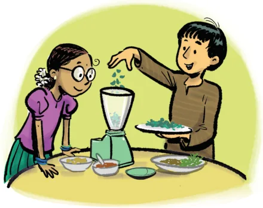

Viswanath is experimenting with a spice mix powder. He makes the powder by grinding 8 spoons of coriander seeds, 4 red chillies, 2 spoons of toor dal, and 1 spoon of fenugreek (methi) seeds. For his spice mix powder, the ratio of coriander seeds to red chillies to toor dal to fenugreek seeds is 8 : 4 : 2 : 1. Notice that the ratio has 4 terms. Ratios can have many terms if each of the quantities change by the same factor to maintain the proportional relationship.

Puneet has only 2 red chillies in his kitchen. But he wants to make spice mix powder that tastes the same as Viswanath’s spice mix powder. How much of the other ingredients should Puneet use to make his spice mix powder? For Puneet’s spice mix powder to be similar to Viswanath’s, the ratio of all the ingredients should be the same as Viswanath’s spice mix powder. Puneet has only 2 red chillies. He has half the number of chillies that Viswanath used in his mixture. So, the quantity of the other ingredients should also be reduced to half. Thus, Puneet should add 4 spoons of coriander seeds, 2 red chillies, 1 spoon of toor dal, and half a spoon of fenugreek seeds. The ratio is

Both the ratios are proportional to each other. We denote this by 8 : 4 : 2 : 1 :: 4 : 2 : 1 : 0.5. In general, when two ratios with multiple terms are proportional a : b : c : d :: p : q : r : s then, \(\frac{a}{p} = \frac{b}{q} = \frac{c}{r} = \frac{d}{s}\) .
Example 1: To make a special shade of purple, paint must be mixed in the ratio, Red : Blue : White :: 2 : 3 : 5. If Yasmin has 10 litres of white paint, how many litres of red and blue paint should she add to get the same shade of purple? In the ratio 2 : 3 : 5, the white paint corresponds to 5 parts. If 5 parts is 10 litres, 1 part is \(10 \div 5 = 2\) litres.
Red \(= 2\) parts \(= 2 \times 2 = 4\) litres. Blue \(= 3\) parts \(= 3 \times 2 = 6\) litres. So, the purple paint will have 4 litres of red, 6 litres of blue, and 10 litres of white paint.
What is the total volume of this purple paint? The total volume of purple paint is \(4 + 6 + 10 = 20\) litres. Example 2: Cement concrete is a mixture of cement, sand, and gravel, and is widely used in construction. The ratio of the components in the mixture varies depending on how strong the structure needs to be. For structures that need greater strength like pillars, beams, and roofs, the ratio is 1 : 1.5 : 3, and the construction is also reinforced with steel rods. Using this ratio, if we have 3 bags of cement, how many bags of concrete mixture can we make? The concrete mixture is in the ratio Bags of cement : bags of sand : bags of gravel :: 1 : 1.5 : 3. If we have 3 bags of cement, we have to multiply the other terms by
- So, the ratio is cement : sand : gravel :: 3 : 4.5 : 9. In total, we have \(3 + 4.5 + 9 = 16.5\) bags of concrete.